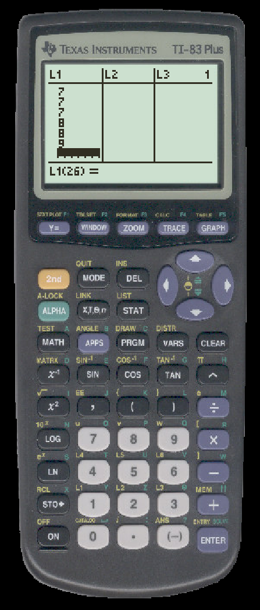
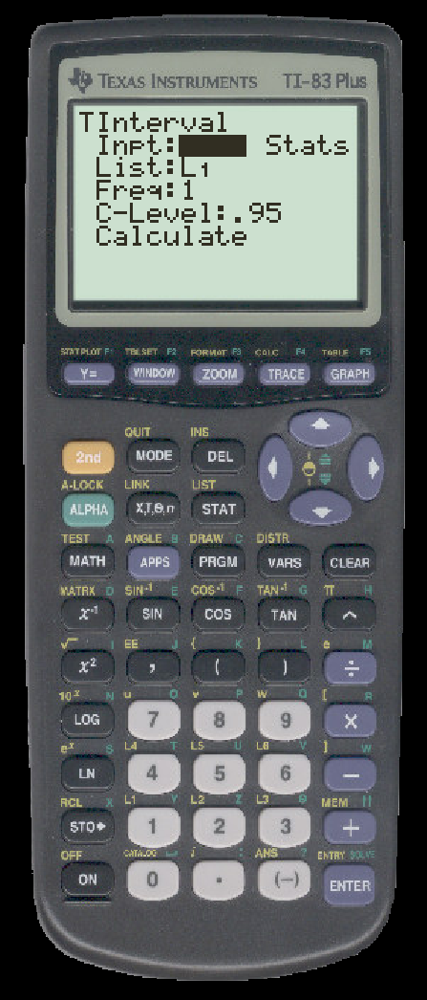
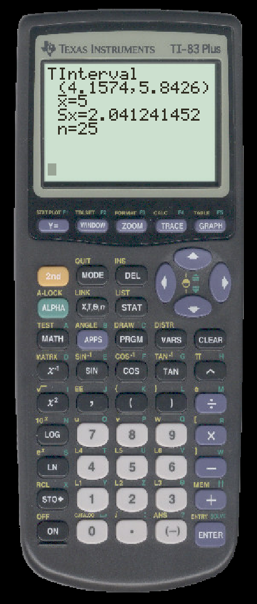
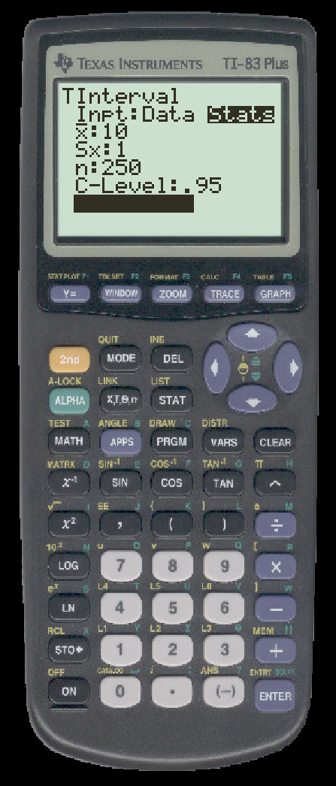
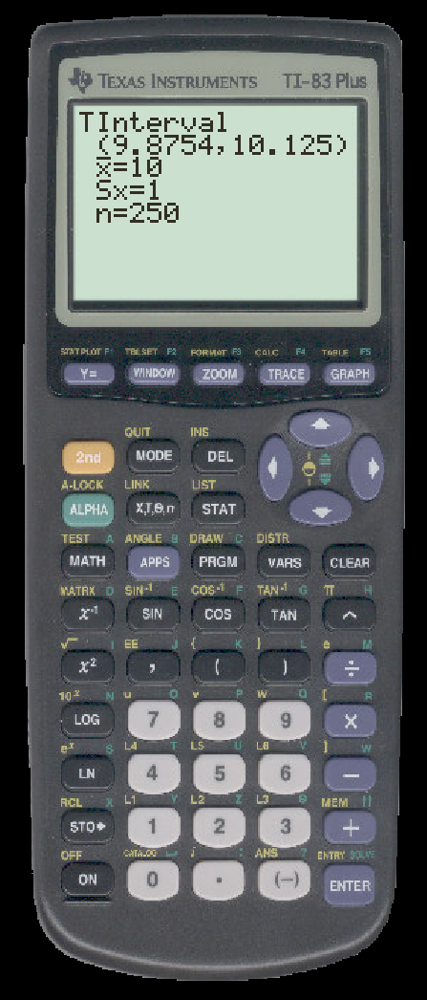

TO CALCULATE A CONFIDENCE INTERVAL FOR A MEAN ON THE TI
First, we calculate a confidence interval for a mean from data.
- First, enter your data in a list, we use L1

- Press STAT and then press the rightarrow twice. Scroll down to select TInterval. This will give

If it is not already highlighted, select ``Data''
- Enter the name of the list where you placed your data. Make sure that ``Freq'' is 1. Enter your confidence level. Press ``Calculate'' and you will see:

Next, we calculate a confidence interval for a mean from summary statistics.
Suppose that a simple random sample of n=250 values has a mean of X = 10
and a standard deviation of s=1. We use this to find a 95% confidence interval estimate of the mean μ.
- Press STAT and then press the right arrow twice. Scroll down to select TInterval.
- Select ``Stats''

- Enter your summary statistics (pictured above) and press enter. You will see
